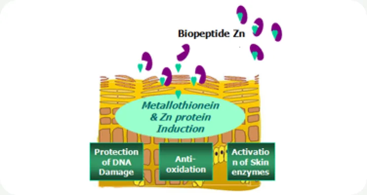

HOME
HOME- 원료소개
- 화장품원료
- Biopeptide Zn
Ingredient research
Biopeptide Zn
효모 발효 유래 아연 펩타이드
01 / Overview & Strengths
개요 & 특장점
효모를 특수 발효하여 추출한 아연 펩타이드 복합체입니다. 아연은 체내의 모든 부분에서 존재하며 피부내의 5%를 차지하고 있습니다. 해독작용에 필수적인 성분이며 강력한 항산화 효과 역시 가지고 있습니다. 자외선 및 외부환경으로 인한 스트레스로 체내에 쌓은 독성물질 제거에 효과가 있는 제품입니다.
※ 자세한 자료는 직접 문의 부탁드립니다.
Product features / Product Strengths
- 항산화 효과
- 피부보호 효과(자외선)
- 항보습 효과

02 / Technical Information
기술 자료
Product Name : Biopeptide Zn
원료 기본 규격 및 제품 카탈로그
- INCI Name
- Saccharomyces, Cu Ferment
- CAS No.
- 999999-57-9
- M.O.Q.
- 1KG
- Pack Size
- 1/5/10/20KG
- Appearance
- Liquid
- Dosage
- 1-10%
※ 운영 사이트의 INCI Name은 ‘Saccharomyces,Cu Ferment’로 기재되어 있어 원료명과의 일치 여부 확인이 필요합니다.
03 / Research Data
기타 데이터
발효 기술(Fermentation technology)로 만든 미네랄 펩타이드 Biopeptide Zn에 담긴 아연(Zinc)의 역할입니다.
- 피부에 분포하는 필수 미네랄
아연은 인체 모든 부위에 존재하며 전체의 약 5%가 피부에 있습니다. 강력한 항산화 성분으로 해독 작용과 건강한 피부 유지에 꼭 필요합니다.
- Metallothionein 유도
세포의 천연 방어 시스템을 이루는 필수 항산화 단백질 Metallothionein 생성을 유도합니다.
- 진피 턴오버 · 회복
진피의 턴오버와 상처 회복 과정에 중요한 역할을 하며, 세포의 DNA · RNA 합성 효소 반응에서 보조 인자로 작용합니다.
Biopeptide ZnAnti-wrinkle, Moisturizing & Skin Protection
- 주름 개선
- 보습
- 피부 보호
Preparation of Biopeptides — 바이오펩타이드 제조 과정
-
유기 펩타이드 + 무기 미네랄
Organic peptide + Inorganic Mn / Zn / Ca / Cu
효모 유래 유기 펩타이드와 무기 미네랄을 준비합니다.
-
배양 기술
Cultivation Tech.
배양 공정으로 미네랄을 펩타이드와 결합합니다.
-
효소 기술
Enzyme Tech.
효소 공정을 거쳐 바이오펩타이드로 완성합니다.
-
Biopeptides
Mn · Zn · Ca · Cu
피부에 필요한 미네랄을 담은 발효 원료
-
Biopeptide Mn Saccharomyces (and) Manganese Ferment 항염 · 보습 (Anti-inflammation & Moisturizing)
-
Biopeptide Zn현재 원료 Saccharomyces (and) Zinc Ferment 주름 개선 · 보습 · 피부 보호
-
Biopeptide Ca Saccharomyces (and) Calcium Ferment 피부 재생 · 피부 보호 (Skin Regeneration & Skin Protection)
- Biopeptide Cu Saccharomyces (and) Copper Ferment 주름 개선 · 보습 · 탈모 방지 원료 보기→
원료 품질 시험 항목 및 기준 · Biopeptide Zn 기준
- Appearance
- Colorless liquid
- Odor
- Characteristic odor
- Zn content
- 50~100ppm
- Solubility
- Water soluble
- Dosage
- 1 ~ 10 %
※ 출처: MacroCare Onepage Catalogue · Biopeptides. 그래프 · 사진은 원문 자료를 사용했습니다. 상세 시험 조건은 별도 문의해 주세요.